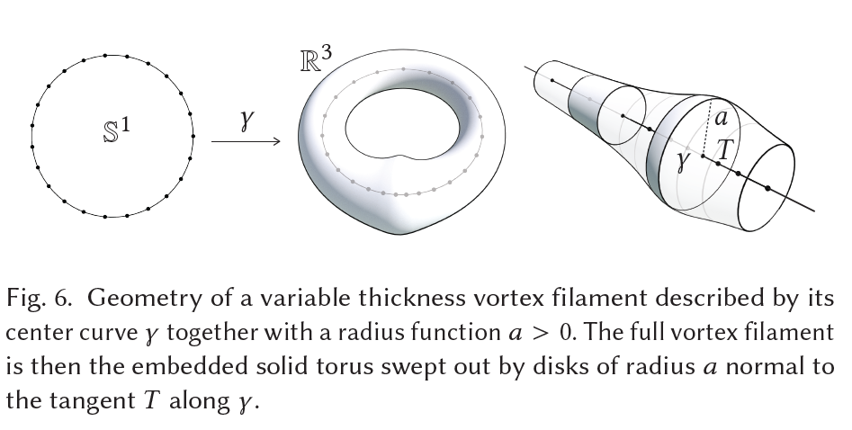
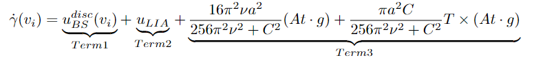
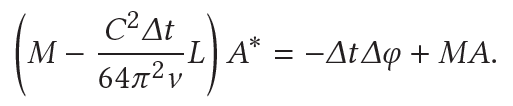
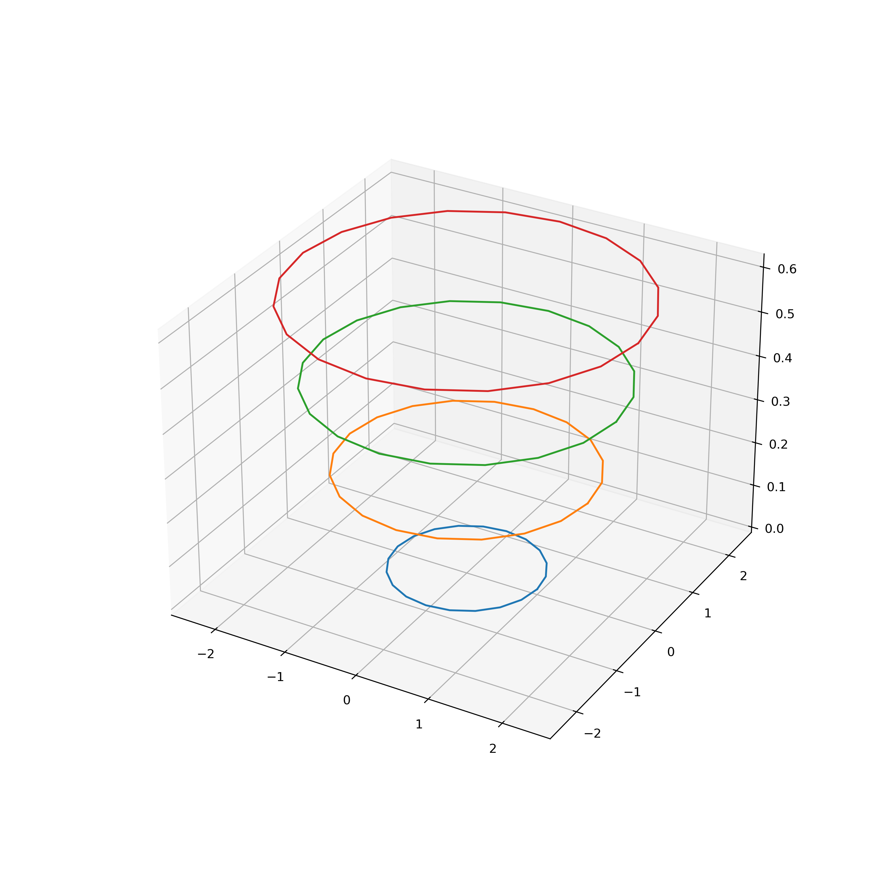
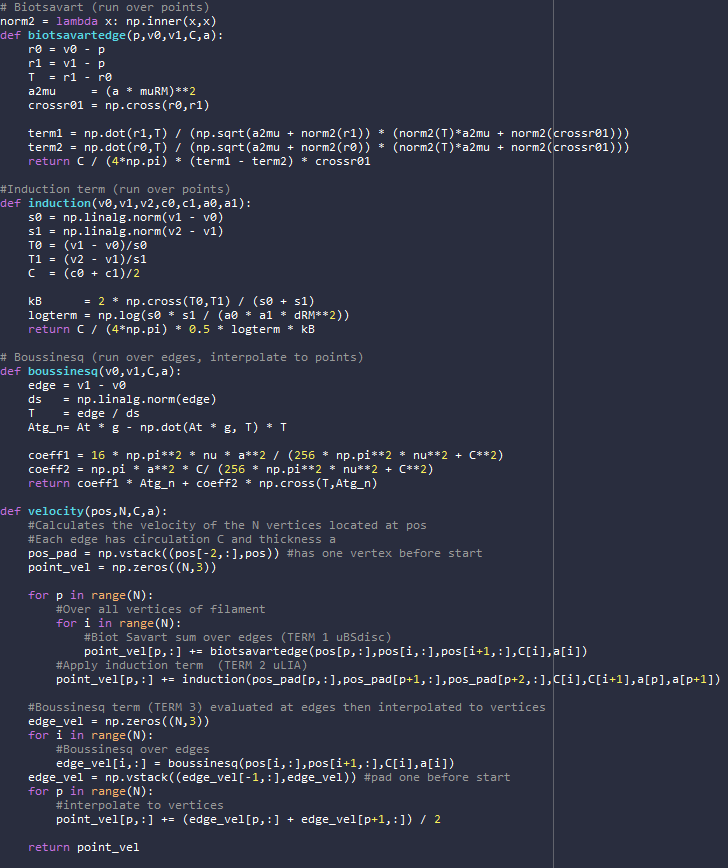
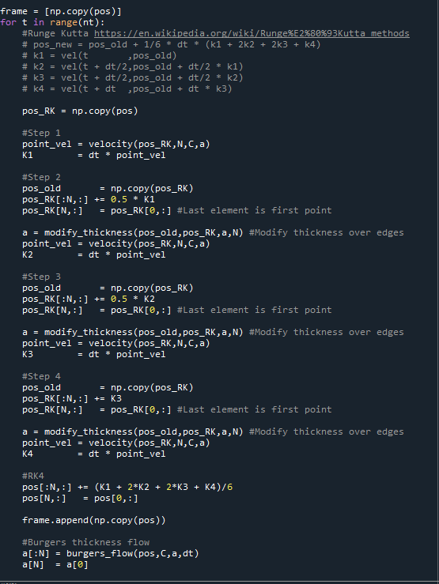
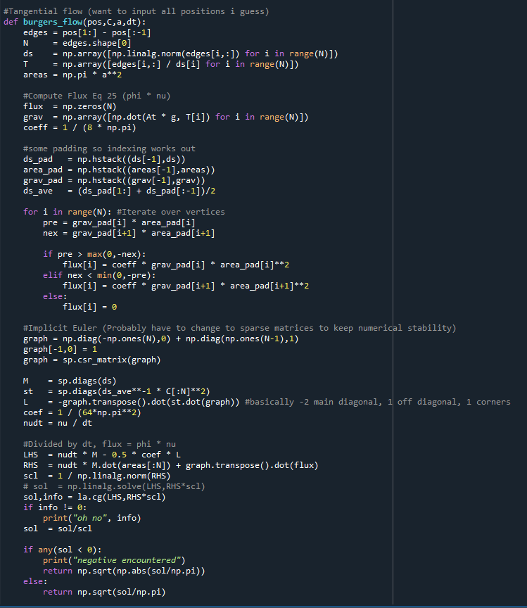

We lay out the progress we have made in the first two weeks of the project.
Presentation Link: https://docs.google.com/presentation/d/1VK7BjovRcQ2ftuPQmr7JTT5c8VEv9UtBY7WoyquQ1vY/edit?usp=sharing
The fluid mechanics and vortex dynamics behind the evolution of bubble rings are quite complex and intriguing. Padilla et al., 2019 develop a simulation method for bubble rings and ink chandeliers by looking at the dynamics of vortex filaments. In this seciton, Ryu, the resident applied math/fluid mechanics person, will attempt to describe the physics and numerical algorithms presented by the paper. For a complete description, the readers are encouraged to read the paper, "On Bubble Rings and Ink Chandeliers" by Padilla et al., 2019.
|

|
The bubble ring is repreesnted as a vortex filament, which is comprised of a closed center curve γ in ℝ3 and a thickness a along the curve. This curve can be discretized and represented as a polygon. The vertices of the polygon carry position information, and the edges have length, direction (which is tangent to the curve), and thickness data. At a high level, the equations of motion are applied to the vertices to evolve them in time, and different equations are applied to model the air flow through the bubble ring based on the new positions, updating the thickness.
A bubble ring underwater experiences a buoyant force pushing it to the surface. In addition, there are lift forces from the fluid motion generated by the vortex, forces from thickness variations in the bubble ring, and dissipation. For a bubble ring, the buoyancy force is estimated by an Atwood number of -1 times gravity, thus it points up towards the water surface as expected.
|

|
The equations of motion eventually collapse into a first order differential equation for the velocity at each vertex for curve γ given by Eq. 18 in Padilla et al., 2019 shown above in a modified form. Circulation C, Atwood number At = -1, kinematic viscosity ν = 1e-6 m2/s are given, and a is the thickness associated with a vertex. The velocity of vertex vi is computed in three parts: Biot-Savart velocity, localized induction, and Boussinesq term. Then, the position of the vertex is evolved in time using a Runge-Kutta 4th order integrator.
|

|
After an update in position, the thickness of the bubble ring allowed to change according to Burgers's Equation rearranged into Eq. 27 in Padilla et al., 2019 for a backward Euler scheme. Here, the flux of air within the bubble ring is calculated, and the thickness along the ring is updated in time.
The splitting and reconnection of bubble rings can also be modeled through a method of Weissmann and Pinkall, 2010. A criterion over pairs of curve segments can be computed to split or combine two vortex filaments. Implementation of this feature is a reach goal for this project.
|

|
An initial implementation of the physics has been attempted in Python closely following Padilla, et al. 2019 and referencing the sample code provided by the authors in the SideFX Houdini physics engine. A resulting single bubble ring propagation is shown in the figure above. We observe the expanding of the bubble ring radius and thinning of the ring (not shown) as it rises. Some issues of numerical stability, especially in the thickness flow remain to be resolved.
|

|
The velocity described in section 1.2 is implemented in this Python code snippet. The three terms of the
velocity Eq. 18 are given by the functions biotsavartedge, induction, and
boussinesq respectively. These functions take vertex positions and associated thicknesses
and circulations as inputs and output the terms of the velocity equation. The summing is done in the
velocity function. The Boussinesq term (Term 3) is computed differently in that it is first
computed over the edges of the bubble ring filament, then it is interpolated to the vertices.
|

|
The velocity found above is used within a Runge-Kutta 4th order integration scheme laid out in the above
Python code. The four terms of RK4 are computed with partial updates of the position pos_RK,
then the terms are used with RK4 weights to update the main position array pos. In the process,
some thickness modifications are done to reflect the partial updates in position.
|

|
Implementation of Burgers's equation and a backwards Euler integration scheme is currently in progress. The method of using sparse matrices was taken from the paper provided Houdini code. However, there seems to be numerical issues when using many vertices for the filament which still needs to be resolved.
We are using Project 4: Cloth Sim as our starting point for the final project, since it implements a simulation that
already incorporates point masses and springs which act between the point masses. We have modified the Cloth
class to a Filament class (aka a bubble ring) whose shape is defined by a vector of Edges and has a
circulation field, which is important for the velocity computations described above. We also have modified the
Spring class to an Edge class, which represents a segment of the bubble ring and has a thickness
associated with it which is again used in the velocity computations above. Also, the Spring class no longer
applies forces to the point masses (stiffness is 0) because we are computing the forces through the above equations, so the
functionality is solely as an edge. Finally, we have added a thickness field to the PointMass class
as well, which is defined as the average of the thicknesses of the two adjacent edges.
Shading is an ongoing investigation. We are going to implement a new shading technique as we did in Project 4 to attempt to photorealistically render the bubble ring during simulation. One approach we have seen is compounding displacement mapping with a sinusoidal time-dependent function to create ripples on the object, as if the object was submerged underwater with waves above it.
Our progess so far has aligned with our schedule. We have looked into the paper we are implementing, found Project 4 as a starting point and modified its objects to support our work, and have a working demo of the simulation of a bubble ring over time, for now in Python. We are getting close to a working simulation in C++, and from there we will create and apply a shader for photorealistic simulation. Finally, if we have time, we will implement bubble ring collision.